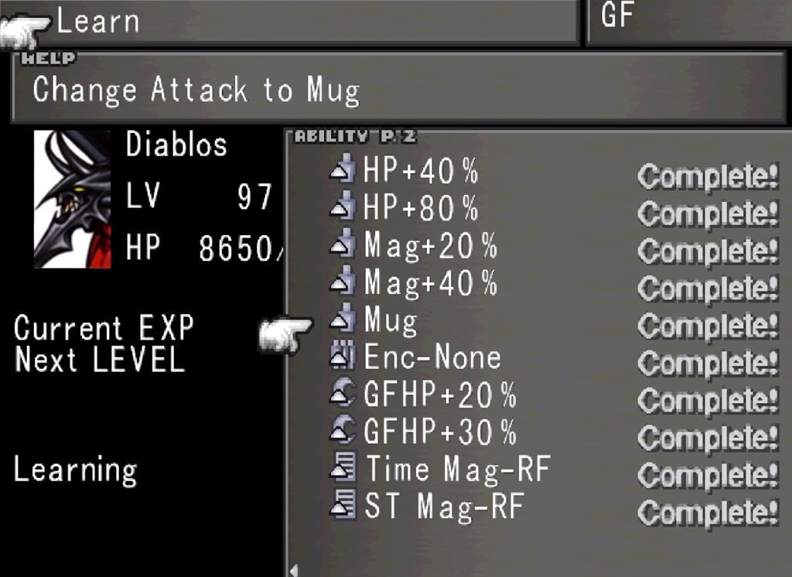

Battle Sytstem
The combat in Final Fantasy VIII is menu driven and uses the Active Time Battle (ATB) system to determine when characters and enemies can perform actions. It features a bar that slowly fills up, and when it does, it allows the player to choose a command.

Active mode is a battle mode where the ATB gauge fills up no matter what is happening in the battle. It emulates real time and makes the battle faster.

Summoning Guardian Forces
 GFs can be summoned in battle with the “GF” Command. This will result in a special command being
performed that is unique to each GF. These commands can vary from multi-target elemental attacks to
commands that buff the party.
GFs can be summoned in battle with the “GF” Command. This will result in a special command being
performed that is unique to each GF. These commands can vary from multi-target elemental attacks to
commands that buff the party.
Summoning a GF will initially swap your character’s health bar with the GF’s HP and the Charge Time gauge (as shown by the blue bar next to the GF’s name). The charge time goes down and denotes how much time is left before the GF’s unique command is used. The speed at which the Charge Time goess down is based on a GF’s Compatibility with the character they are junctioned to.
While the Charge Time Gauge goess down, Commands that would damage the character will instead damage the GF and affect their HP. If a GF’s HP falls to zero, then the summon will be canceled and the GF can’t be summoned again until they are revived. However, you can still junction them and they can receive AP and EXP as normal.
Limit Breaks

Limit breaks are powerful commands that are only accessible at certain points in combat. Most commonly, they’re available when a character is at low health. When a limit break is available, it’s indicated by anright arrow icon.

To use a Limit Break, the character must be above a certain crisis level. As the Crisis Level increases further, the Limit Break will become more powerful.